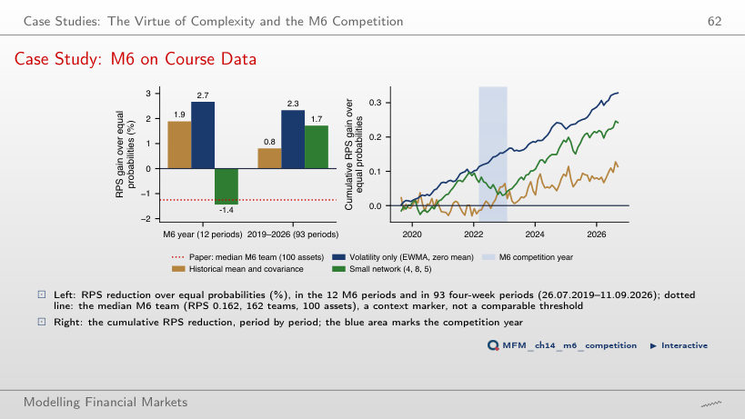

The slide of the lecture is on the left, the same figure on the right, computed in the browser from the same data. The ▶ button moves the parameter step by step.
What We Forecast and Where the Signal Is · Attention and Transformers · Test 1: Forecasting Returns · Test 2: Forecasting Realised Volatility · Test 3: VaR 1% and ES 2.5% · Case Studies: The Virtue of Complexity and the M6 Competition · AI for Scientific Discovery
What We Forecast and Where the Signal Is
Where Is the Signal?

Answer
The absolute values. Their autocorrelation is 0.29 at lag 1 and 0.13 at lag 50, and all 50 values lie outside the ±0.024 band. Returns have a lag-1 autocorrelation of −0.099 and 15 lags outside the band, small and of changing sign. A negative sign does not imply stronger persistence, and forecasting the mean and forecasting volatility are distinct problems. The plot suggests volatility clustering; forecast usefulness is checked out-of-sample. The band is an approximate pointwise reference under an i.i.d. null, not a simultaneous band for all lags.
Attention and Transformers
Patching a 512-Day Context

Answer
There are 512/16 = 32 tokens and 32² = 1,024 ordered pairs, against 512² = 262,144 if each day were a token: 16² = 256 times fewer. TimesFM-2.5 uses patches of 32 days: 16 tokens and 256 entries. This is the simplified calculation for one head, without additional tokens; a multi-head layer has one such matrix per head.
Test 1: Forecasting Returns
Out-of-Sample R² for Returns

Answer
No. AR(1) and the LSTM reduce the observed mean squared error by 0.94% and 0.93% (out-of-sample R²), but their two-sided DM p-values are 0.639 and 0.090. The test establishes neither superiority at 5% nor equality. TimesFM-2.5 is significantly worse than zero (R² −3.35%, DM p = 0.001). Only on the BET does the LSTM pass at 5% (R² +1.15%, p = 0.014), before the correction for multiple tests.
Test 2: Forecasting Realised Volatility
Forecasts Through the April 2025 Shock

Answer
None. Realised volatility reached 106.7% annualised. Forecasts for that day were 27.5% for log-HAR, 29.9% for GARCH-t, 30.1% for Chronos-2 and 30.4% for TimesFM-2.5. They had already risen from the previous day, after the jump of 4 April (46.3%), but underestimated the peak more than threefold. Heavy tails and pre-training do not supply the information in tariff news not yet observed.
QLIKE Losses of Eight Volatility Models

Answer
Mean QLIKE is 0.223 for Chronos-2 and 0.226 for log-HAR, but the DM p-value is 0.539. The descriptive advantage does not establish statistical superiority, and non-rejection does not establish equivalence. After 3 November 2025, the small LSTM has the lowest observed mean, 0.217; this is a sample ranking.
Test 3: VaR 1% and ES 2.5%
VaR 1% Breach Rates

Answer
Yes. The Kupiec p-value is approximately 0.001. Under independent breaches with probability 1%, the nominal central 95% binomial range is [17, 37]; the 45 breaches (a rate of 1.67%) exceed it. More breaches indicate undercoverage, not conservatism. The range is discrete, and the Kupiec critical value is asymptotic. Used as a volatility filter for FHS, the same model gives 0.93% (p = 0.71).
The COVID-19 Crash: VaR 1% of Three Models

Answer
No. Both have 2 breaches over 104 days, but different paths: the highest VaR 1% is 58.9% for the hybrid (17.03.2020) and 26.4% for FHS, and the largest observed daily loss is 12.8%. These values motivate evaluating calibration and forecast loss. Neither equal breach counts nor VaR exceeding the largest realised loss establishes a ranking by itself. Raw Chronos-2 has 4 breaches, HS 12.
The Probability Integral Transform (PIT) and Calibration

Answer
On 1.67% of the days, so the first PIT bar is 1.67 times its expected height: undercoverage at the 1% quantile. This frequency alone does not describe the shape of the whole tail. FHS gives 1.11%. The Berkowitz test rejects Chronos-2 on the S&P 500 (p = 0.019, σ̂ = 1.03); in the reported full-period tests, FHS is not rejected on any of the three markets.
Comparing (VaR 2.5%, ES 2.5%) Forecasts: the MCS

Answer
Only HS on the BET has an MCS p-value below 0.10: it is 0.015. An MCS can retain several models without establishing that they are equivalent. On the S&P 500 FHS has the lowest FZ0 loss, and the DM test, Holm-adjusted over the five comparisons with FHS, separates FHS from the Chronos-2 hybrid (DM +2.65, p = 0.008 before the correction, Holm p = 0.032). On the BET the same test gives Holm p = 0.054.
Adaptive Conformal VaR 1% on the S&P 500

Answer
It is higher: 3.36% for the conformal correction and 2.85% for FHS over 2,443 days, although the breaches are 21 against 24.4 expected. Breach rates close to the target do not imply equal averages. Separately, the joint VaR–ES comparison at 2.5% gives mean FZ0 losses of 1.205 and 1.013, with DM p = 0.001; this does not follow from average VaR 1% alone. With γ = 0 (rolling calibration at a fixed level) there are 16 breaches and an average VaR of 3.58%.
Case Studies: The Virtue of Complexity and the M6 Competition
Case Study: Complexity on Course Data

Answer
It rises to c = 50, then falls: 0.12 at c = 1, the grid maximum of 0.26 at c = 50 and 0.11 at c = 1,000 (t = 0.6). The linear model with the same 7 predictors and z = 10³ has 0.32. This is a result for the stated penalty and sample, not a general rule about complexity.
Case Study: M6 on Course Data

Answer
The volatility-only model. RPS reductions relative to equal probabilities are 2.33% for it (DM −6.35, p < 0.001), 0.81% for the historical mean (p = 0.358) and 1.72% for the network (p = 0.016). Volatile assets get larger probabilities for the extreme quintiles. The ranking does not follow from using means or from model complexity, and it changes with w: at w = 0.5 the historical mean gains 1.91%, slightly above the volatility model (1.88%); at w = 2 the volatility model gains only 0.28%.
AI for Scientific Discovery
Mini-Case: a Test Without Power

Answer
Neither its presence nor its absence. The estimated change in the QLIKE differential against log-HAR is +0.0074, with HAC t = 0.88 and p = 0.38. The MDE at 80% power is 0.0234, larger than the observed change; even an infinite post-release window would leave an MDE of 0.0157. Non-rejection does not rule out memorisation, and a significant change would not by itself distinguish memorisation from a change in market regime.
Daily returns of the S&P 500, Bitcoin and the BET and 5-minute SPY prices: EODHD. One-day-ahead forecasts: Quantlets/Ch_14 (run_forecasts.py). Case studies: SPY and the 19 M6 assets (EODHD), FRED series; M6 forecasts: Quantlets/Ch_14 (m6_case.py).